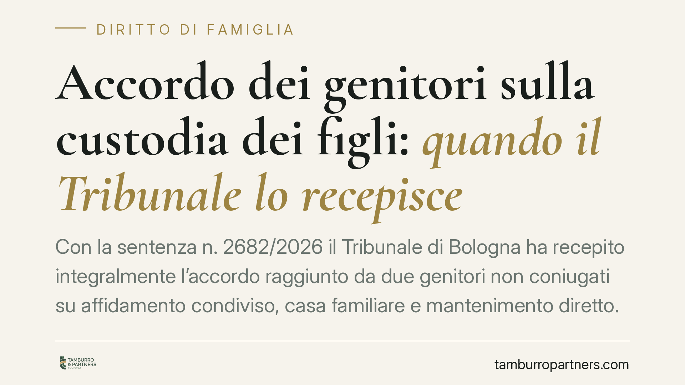

Accordo dei genitori sulla custodia dei figli: quando il Tribunale lo recepisce
Con la sentenza n. 2682/2026 il Tribunale di Bologna ha recepito integralmente l'accordo raggiunto da due genitori non coniugati su affidamento condiviso, casa familiare e mantenimento diretto. Il giudice si è limitato a verificarne la conformità all'ordine pubblico e all'interesse dei minori, senza sostituirsi alle scelte concordate. Una decisione che chiarisce quanto pesa la volontà delle parti nei procedimenti sulla responsabilità genitoriale.

Il caso
Due genitori non coniugati hanno sottoposto al Tribunale di Bologna un accordo articolato riguardante i figli minori: affidamento condiviso, assegnazione della casa familiare, mantenimento in forma diretta e ripartizione delle spese straordinarie.
Il Tribunale, con la sentenza n. 2682/2026, ha recepito l'intesa nella sua interezza. Il punto rilevante non è tanto l'esito, quanto il metodo: il giudice non ha rimodellato le clausole né imposto soluzioni proprie. Ha svolto un controllo di legalità e di coerenza con l'interesse dei minori, poi ha ratificato.
Inquadramento normativo
La cornice è quella del rito unificato in materia di persone, minorenni e famiglie, introdotto dal D.Lgs. 149/2022 (riforma Cartabia) e disciplinato dagli artt. 473-bis e seguenti del codice di procedura civile.
In questo assetto la volontà dei genitori ha un ruolo centrale. Il legislatore valorizza le soluzioni concordate, purché rispettose di due limiti invalicabili: l'ordine pubblico e l'interesse del minore. Entro questi confini, il giudice non ha un potere di merito illimitato. Non può cioè sostituire la propria valutazione di opportunità a quella dei genitori, che restano i primi titolari della responsabilità genitoriale.
Resta ferma la partecipazione del Pubblico Ministero, chiamato a esprimersi a tutela dei minori. Ma anche il suo intervento non trasforma il controllo in un sindacato sulle scelte di dettaglio: verifica la legittimità, non riscrive l'accordo.
Cosa significa "mantenimento diretto"
Un chiarimento utile, perché il termine ricorre spesso. Il mantenimento diretto è la modalità con cui ciascun genitore provvede alle esigenze del figlio nei periodi in cui lo tiene con sé, sostenendo le relative spese, senza versare un assegno mensile all'altro. È alternativo all'assegno periodico e presuppone di regola un sostanziale equilibrio tra le condizioni economiche dei genitori e tra i tempi di permanenza del minore con ciascuno.
Le spese straordinarie (mediche, scolastiche, sportive di rilievo) restano invece oggetto di ripartizione a parte, di norma al 50% o in proporzione ai redditi.
Implicazioni pratiche
Per i genitori che intendono definire consensualmente i rapporti con i figli, la decisione conferma un indirizzo favorevole all'autonomia delle parti.
Un accordo ben costruito ha buone probabilità di essere recepito senza modifiche. Questo comporta procedimenti più rapidi, minore conflittualità e maggiore prevedibilità.
Attenzione però al rovescio della medaglia. Il giudice recepisce ciò che è conforme all'interesse del minore. Un'intesa squilibrata, lacunosa o penalizzante per i figli può essere non ratificata o corretta. L'autonomia delle parti non è un salvacondotto: è uno spazio che va riempito con contenuti solidi.
Due aspetti meritano cura particolare. Il primo è la completezza: un accordo che tace su temi come le spese straordinarie o la gestione delle decisioni di maggiore interesse apre la porta a futuri contenziosi. Il secondo è la sostenibilità nel tempo: il mantenimento diretto, ad esempio, regge finché permane un equilibrio economico e organizzativo tra i genitori.
Cosa fare in concreto
- Redigete l'accordo in modo completo: affidamento, tempi di permanenza, casa familiare, mantenimento e criteri per le spese straordinarie devono essere disciplinati puntualmente.
- Ancorate ogni clausola all'interesse concreto dei figli: è il parametro che il giudice verificherà.
- Verificate la coerenza tra mantenimento diretto e reale equilibrio economico; se le condizioni sono squilibrate, valutate l'assegno periodico.
- Prevedete criteri chiari per le decisioni future (scuola, salute, attività) e meccanismi di revisione in caso di cambiamenti rilevanti.
- Fatevi assistere nella stesura prima del deposito: correggere a monte è più semplice che difendere in giudizio un'intesa fragile.
In sintesi
La sentenza bolognese conferma che l'accordo dei genitori è la via privilegiata, ma solo se solido e orientato all'interesse dei minori. Il controllo giudiziale c'è, ed è di legalità e coerenza: non basta accordarsi, occorre accordarsi bene.
---
*Contributo informativo a cura di Tamburro & Partners - Avv. Giuseppe Tamburro. Non costituisce parere legale.*
Ogni famiglia ha il suo equilibrio.
Separazione, divorzio, affidamento, assegno: se vuoi un confronto riservato su una specifica situazione, scrivi allo studio. Ti rispondiamo entro un giorno lavorativo.